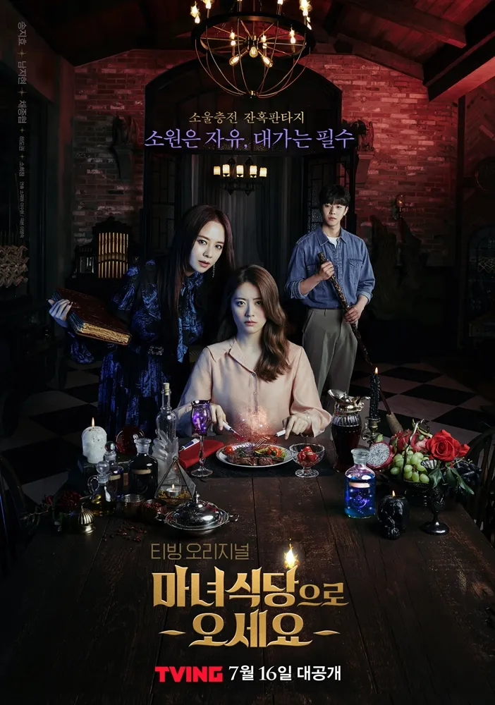

이야기를 따라 걷다
이어진 동행 : 35작품-

- 삼총사
- 2014.08.17 ~ 2014.11.02
- 12부작 / 15세이상
- 조선 인조시대를 배경으로 강원도 무인이자 가난한 집안의 양반 출신으로 한양에 올라와 무과에 도전하는 '박달향'이 자칭 "삼총사"인 '소현세자'와 그의 호위무사 '허승포', '안민서'를 만나, 조선과 명청 교체기의 혼란했던 중국을 오가며 펼치는 호쾌한 액션 로맨스 활극
-

- 시그널
- 2016.01.22 ~ 2016.03.12
- 16부작 / 15세이상
- "우리의 시간은 이어져있다." 과거로부터 걸려온 간절한 신호(무전)로 연결된 현재와 과거의 형사들이 오래된 미제 사건들을 다시 파헤친다!
-

- 하백의 신부 2017
- 2017.07.03 ~ 2017.08.22
- 16부작 / 15세이상
- 만화 <하백의 신부> 스핀오프! 2017년, 인간 세상에 내려온 물의 신(神) '하백'과 대대손손 신의 종으로 살 팔자로, 극 현실주의자인척하는 여의사 '소아'의 신(神)므파탈 코믹 판타지 로맨스
-

- 명불허전
- 2017.08.12 ~ 2017.10.01
- 16부작 / 15세이상
- 침을 든 조선 최고의 한의사 허임과 메스를 든 현대 의학 신봉자 외과의 연경이 400년을 뛰어넘어 펼치는 조선 왕복 메디활극
-

- 계룡선녀전
- 2018.11.05 ~ 2018.12.25
- 16부작 / 15세이상
- 전래동화 '선녀와 나무꾼' 비하인드가 궁금해? 699년 동안 계룡산에서 나무꾼의 환생을 기다리며 바리스타가 된 선녀 선옥남이 '정이현과 김금' 두 남자를 우연히 만나면서 벌어지는 이야기
-

- 검색어를 입력하세요 WWW
- 2019.06.05 ~ 2019.07.25
- 16부작 / 15세이상
- 트렌드를 이끄는 포털사이트, 그 안에서 당당하게 일하는 여자들과 그녀들의 마음을 흔드는 남자들의 리얼 로맨스
-

- 유령을 잡아라
- 2019.10.21 ~ 2019.12.10
- 16부작 / 15세이상
- '첫차부터 막차까지! 우리의 지하는 지상보다 숨 가쁘다!' 시민들의 친숙한 이동 수단 지하철! 그곳을 지키는 지하철 경찰대가 '지하철 유령'으로 불리는 연쇄살인마를 잡기 위해 사건을 해결해가는 상극콤비 밀착수사기
-

- 사랑의 불시착
- 2019.12.14 ~ 2020.02.16
- 16부작 / 15세이상
- 어느 날 돌풍과 함께 패러글라이딩 사고로 북한에 불시착한 재벌 상속녀 윤세리와 그녀를 숨기고 지키다 사랑하게 되는 특급 장교 리정혁의 절대 극비 러브스토리를 그린 드라마
-

- 구미호뎐
- 2020.10.07 ~ 2020.12.03
- 16부작 / 15세이상
- 도시에 정착한 구미호와 그를 쫓는 프로듀서의 판타지액션로맨스
-
- 배드 앤 크레이지
- 2021.12.17 ~ 2022.01.28
- 12부작 / 15세이상
- 유능하지만 '나쁜 놈' 수열이 정의로운 '미친 놈' K를 만나 겪게 되는 인성회복 히어로 드라마
-

- 마녀식당으로 오세요
- 2022.01.05 ~ 2022.01.19
- 8부작 / 15세이상
- 대가가 담긴 소원을 파는 마녀식당에서 마녀 희라(송지효)와 동업자 진(남지현), 알바 길용(채종협)이 사연 가득한 손님들과 만들어가는 소울 충전 잔혹 판타지
-

- 구미호뎐1938
- 2023.05.06 ~ 2023.06.11
- 12부작 / 15세이상
- 1938년 혼돈의 시대에 불시착한 구미호가 현대로 돌아가기 위해 펼치는 K-판타지 액션 활극